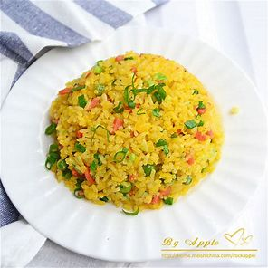

🥘 美食 - 蛋炒饭专题 🍳
🍚 蛋炒饭制作步骤
- 准备食材和调料：米饭、鸡蛋、葱花、火腿肠（可选）、水、食用油、生抽。
- 处理食材：鸡蛋打入碗中，加入少量盐，用筷子搅拌均匀；火腿肠切成小丁；葱花切段备用。
- 炒蛋：锅中倒入适量食用油，油热后将蛋液倒入锅中，用铲子快速划散，炒成小块后盛出。
- 炒配菜：若有火腿肠，锅中再倒少许油，放入火腿肠丁翻炒至表面金黄。
- 炒米饭：将米饭倒入锅中，用铲子将结块的米饭碾碎，不断翻炒。
- 调味：加入适量生抽和水，继续翻炒，让米饭均匀上色。
- 混合：把炒好的鸡蛋倒入锅中，与米饭充分混合翻炒。
- 出锅：撒上葱花，翻炒几下后即可出锅装盘。
📸 蛋炒饭成品展示

📅 一周餐单推荐
| 餐别 |
周一 |
周二 |
周三 |
周四 |
周五 |
| 早餐 |
面包、水煮蛋、牛奶 |
全麦面包、低脂酸奶、香蕉 |
玉米粥、馒头、咸菜 |
馒头、豆浆、小蛋糕 |
面条、鸡蛋、青菜 |
| 午餐 |
米粉、清炒时蔬、清蒸鱼 |
番茄面、肉酱意大利面、沙拉 |
煎饼、火腿煎蛋、西葫芦 |
面条、百合莲子羹、炖排骨 |
馒头、香菇炒肉、豆腐汤 |
| 晚餐 |
玉米糊、南瓜饼 |
蛋糕水果拼盘、炒青菜 |
粥、生煎包 |
馄饨、烧麦 |
玉米粥、水蒸蛋 |